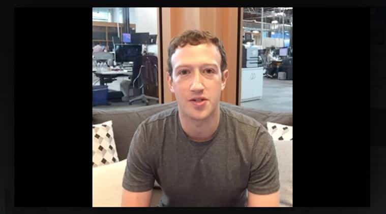

Writer. Filmmaker. Lover of cuckoo clocks. Email: harrylimerok @gmail.com.


Last week via Facebook, Mark Zuckerberg hosted his first hour-long live Q&A from the company’s headquarters in Menlo Park, California. Intended as an open forum for any of Facebook’s 1.65 billion users to ask the company’s CEO their burning questions, Zuckerberg quickly used one of them to pitch his vision of the “global community”.
The naive viewer would find nothing strange or off-putting about Zuckerberg’s spiel. His voice had that giddy, effete inflection a lot of Millennial techies tend to use to lull their listeners into a passive state of glee and unthinking optimism about technology’s future (without us). It is worth noting that since cashing in on public figure status, Zuckerberg’s body language has improved–the confidence in his firm hand gestures chopping the air has helped reinforce the message behind his words, even when that message is a bad one. However, for the initiated viewer attuned to Facebook’s newfangled political agenda, you will detect what Zuckerberg is espousing is undeniably globalist in nature.
After the opening pleasantries, Zuckerberg warmed viewers up with a broad and cozy premise: “We need to use social media to find solutions to humanity’s problems.” By solutions, of course, he doesn’t mean generating colourful banners for the site’s users to feign dedication toward a particular tragedy or cause? No, that is not his implication, per se.
He continues, while, on the way, stumbling over the acronym LGBT with “LGDP” (Lesbian-Gay-Double Penetration?), to propose his solution: By building technology, “people can come together and kind of level up humanity and start to see ourselves less as nations of people and more as a global community.” Did a nuke Dr. Strangelove-style just go off in your head? If it did, you should remove the words “Little Boy” from its shell and replace it with “Cultural Marxism”.
Zuckerberg’s so-called solution denotes the very definition of globalism: a socio-political system that strips nations of their traditions and replaces them with a globalized society run by a group of elites (who only serve to benefit) without a unified culture. Of course, Zuckerberg skirts that explanation, couching it in vague language like “new political systems” and “citizens of the world.”
By “technology,” Zuckerberg never clarifies what type of technology and who would control it. In a globalist society, the controllers would be private monopolies under the auspices of foreign banks and the Federal Reserve, but Zuckerberg avoids getting down to those specifics–or perhaps he is not even aware.

“A lot of the problems you’re talking about,” he adds, “whether it’s terrorism, the refugee crisis, or climate change, or global diseases spreading around the world, these are not things that can be solved by any one city or one nation or one small group of people.” Yet, Zuckerberg fails to point out that these issues are perpetuated by the globalist agenda itself.
For example, the influx of Syrian refugees into “generous” European countries like Germany, France, and Sweden has destabilized those regions, upsetting their social order and leading to increases in crime, namely the rape of its women (a subject Western feminists have chosen to stay silent on). Globalism is the very engine of this current calamity; it, by definition, requires a world with open borders for “diverse” cultures to mix and muddle up. Thus, globalism’s “multiculturalism” seeks to overwhelm nations and local communities with groups that will not (or cannot) assimilate to the national culture.
Today, nationalism has become a faux pas (hence Donald Trump’s surging popularity amongst America’s traditionally patriotic base–and lack of popularity amongst globalist leftists and cuckservatives, in turn). With the proliferation of worldwide information sharing and virtual interconnectivity (due, in part, by Facebook), globalism has become the mainstay for which countries around the world are meant to participate. Zuckerberg is encouraging this gross idea, admitting “we have a lot of work to do”, without acknowledging that globalism itself is riding shotgun in exacerbating the world’s “problems”.
Throughout the Q&A, you can sense the hollowness behind Zuckerberg’s words. His overuse of “global infrastructure,” “organize everyone together,” and other platitudes imply the merry-go-round simplicity of his ideas. His arguments are the verbal equivalent of placing daisies in a rifle, if those carnations were sprayed down with DDT–and if Zuckerberg were wearing a turtleneck, but, alas, he’s sporting a bland grey crew neck. Zuckerberg’s bloodshot eyes–either from a lack of sleep or pure camera fright–remain lit open throughout most of the Q&A, giving off the strange feeling that he is scared of what he is saying, and not confident about it, either.
Comedians In Cars Getting Censored
Fortunately, the Q&A gets enlivened by the arrival of comedian Jerry Seinfeld. At first, his appearance brought tremendous woe, thinking one of today’s great funny mans and leaders against political correctness had sold himself out to a billionaire yuccie who censors conservatives’s free speech.
Thankfully, that wasn’t the case. Stopping by Facebook’s headquarters to test drive an Oculus Rift demo, Seinfeld crashed Zuckerberg’s globalist party to playfully mock the CEO’s said views. Responding to the “global community,” Seinfeld scoffs, “what part would we play other than can I take a selfie with you?” Zuckerberg blushes, stifling his frustration that Seinfeld won’t nod along to his nonsense. Seinfeld goes so far as to reject a Q’ers invitation to a block party and dismiss Zuckerberg’s queue of questions as “not interesting at all”.
Here, Seinfeld’s pitch-perfect candour actually starts to disarm the nebbish CEO. Zuckerberg’s facial expressions become less stilted, his speech more uninhibited (“I wasn’t planning to talk about this publicly!”, Zuckerberg admits after Seinfeld prods him about his personal life), and his body language looser. The hilarity escalates as Seinfeld continues to poke fun at Zuckerberg’s philosophy: “Your goal was to take the social experience and put it online; I want to eliminate the entire social experience,” noting the irony that Zuckerberg’s social media website has effectively done just that.
With Seinfeld’s appearance, the Q&A veered from a globalist gymboree to a frank yet lighthearted exposé of Zuckerberg’s dubious political position. Once again, Seinfeld reminds us that humour–combined with decisive action and critical thinking–is the answer to taking the legs out from under the globalist’s stance.
Read More: Mark Zuckerberg Announces Plan To Censor Discussion Of Europe’s Refugee Crisis On Facebook